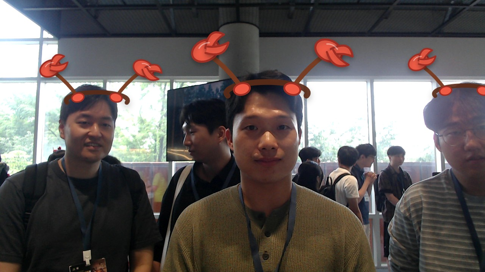

Sunwoo PARK
Grad student
MOTTOHappy life
Sunwoo PARK — 서울대 대학원생의 연구와 일상 기록
About me
서울대 대학원생
What I do
AI-written bio
서울대 대학원생으로서 공부와 연구, 캠퍼스에서의 경험을 개인 GitHub 스타일 블로그에 정리합니다.
AI first impression
차분하고 친근한 분위기의 개인 블로그 프로필 사진입니다.

Grad student
MOTTOHappy life
Sunwoo PARK — 서울대 대학원생의 연구와 일상 기록
서울대 대학원생
서울대 대학원생으로서 공부와 연구, 캠퍼스에서의 경험을 개인 GitHub 스타일 블로그에 정리합니다.
차분하고 친근한 분위기의 개인 블로그 프로필 사진입니다.